Historia GNU/Linux#
GNU/Linux es la denominación técnica y generalizada que reciben los sistemas operativos que están formados mediante la combinación de varios proyectos, entre los cuales destaca el entorno GNU, llevado a cabo por la Free Software Foundation, una fundación cuyo propósito es difundir el software libre, así como el núcleo de sistema operativo conocido como «Linux», encabezado por el programador finlandés Linus Torvalds.
El desarrollo de estos sistemas operativos es uno de los ejemplos más prominentes de software libre: todo su código fuente puede ser utilizado, modificado y redistribuido libremente por cualquier persona, empresa o institución, bajo los términos de la Licencia Pública General de GNU (GPL), así como de otra serie de licencias.
A pesar de que en la jerga cotidiana la mayoría de las personas usan el vocablo «Linux» para referirse a este sistema operativo, en realidad ese es solo el nombre del kernel o núcleo, ya que el sistema completo está formado también por una gran cantidad de componentes del proyecto GNU, que van desde compiladores hasta entornos de escritorio.
Sin embargo, tras publicar Torvalds su núcleo Linux en 1991 y ser este usado junto al software del proyecto GNU, una parte significativa de los medios generales y especializados han utilizado el término «Linux» para referirse a estos sistemas operativos completos. Cabe señalar que existen sistemas operativos que usan el núcleo Linux pero que no llevan componentes GNU, como por ejemplo Android, y también distribuciones de software GNU donde el núcleo Linux está ausente, como Debian GNU/Hurd, que sustituye Linux por el micronúcleo Hurd del propio proyecto GNU.
Un poco de cronología:
1969 Ken Thompson y Dennis Ritchie crean Unix en los laboratorios Bell.
1983 Richard Stallman anuncia el proyecto GNU: un sistema operativo completo y libre compatible con Unix.
1985 Se funda la Free Software Foundation.
1989 Primera versión de la licencia GPL.
1991 Linus Torvalds publica el núcleo Linux; combinado con las herramientas GNU nace el sistema GNU/Linux.
1993 Nacen Debian y Slackware, las distribuciones más antiguas que siguen vivas.
2004 Primera versión de Ubuntu, basada en Debian.
Los sistemas operativos GNU/Linux se encuentran normalmente en forma de compendios conocidos como distribuciones o distros, a las cuales se les han añadido selecciones de aplicaciones y programas con las que el sistema cuenta directamente al ser instalado, así como una amplia serie de programas que pueden descargarse desde un repositorio (un almacén de software) para su posterior instalación. El propósito de estas distribuciones es ofrecer GNU/Linux como un producto final que el usuario pueda instalar en su computadora como sistema operativo principal o en una máquina virtual, cumpliendo con las necesidades de un grupo determinado de usuarios o del público general.
Algunas de estas distribuciones son especialmente conocidas por su uso en servidores de Internet, supercomputadoras y sistemas embebidos.
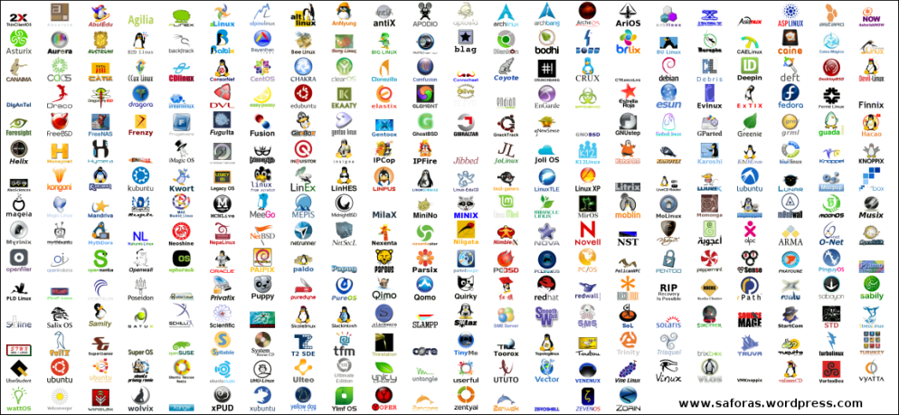
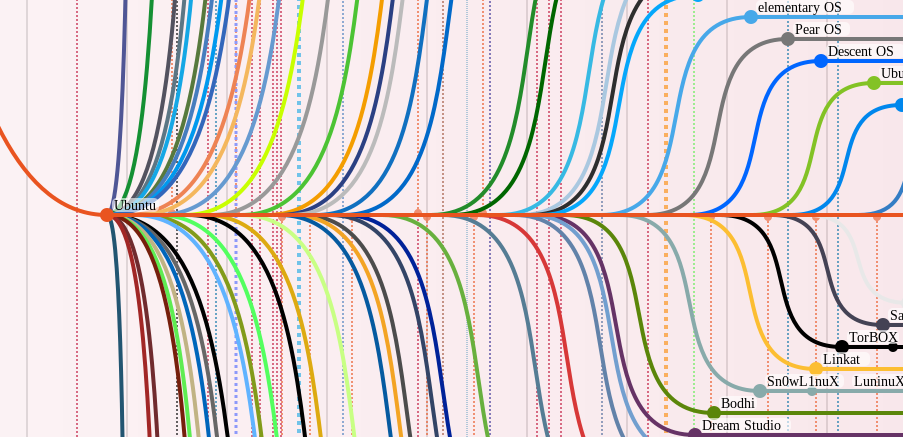
Para ver de dónde viene cada una descárgate el siguiente Timeline
{kind=link}
En la siguiente lista puedes ver algunas de las distribuciones más utilizadas actualmente:
Debian
Ubuntu
Linux Mint
Fedora
OpenSuse
Arch Linux
Gentoo Linux
CentOS (descontinuada, su sucesora comunitaria es Rocky Linux)
Kubuntu
Slackware
Puppy Linux
PCLinuxOS
El Filesystem Hierarchy Standard (FHS) nació en 1994 y es actualmente mantenido por la Linux Foundation: define la estructura de directorios y el contenido de los principales directorios del sistema. Aun siendo un estándar, no todas las distribuciones lo siguen al pie de la letra: la mayoría se adapta a él lo máximo posible, pero algunas se desvían en ciertas áreas.
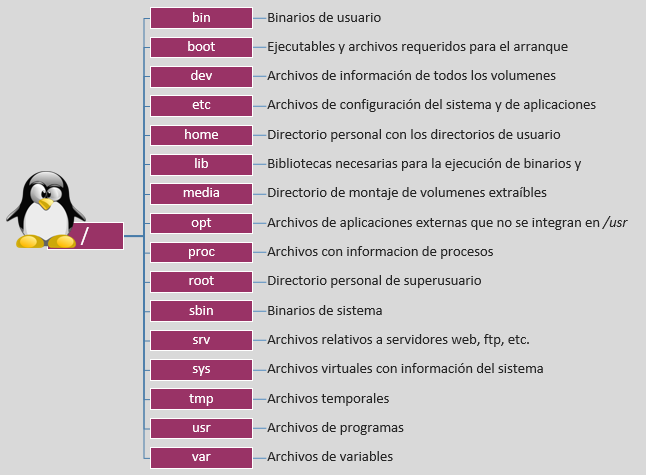
Entornos de Escritorio#
Linux ofrece muchas alternativas. Los entornos de escritorio más populares son:
GNOME se ha traducido a 193 idiomas, con una cobertura mayor al 80% para 38 idiomas. GNOME está disponible en las principales distribuciones GNU/Linux, incluyendo Fedora, Debian, Ubuntu, Manjaro Linux, Red Hat Enterprise Linux, SUSE Linux Enterprise, CentOS, Oracle Linux, Arch Linux, Gentoo o SteamOS, entre otras. También se encuentra disponible en Solaris, un importante sistema operativo UNIX, y en sistemas Unix-like como FreeBSD.
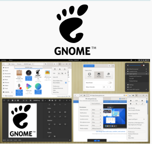
KDE es una comunidad internacional que desarrolla software libre. Produce un entorno de escritorio, multitud de aplicaciones e infraestructura de desarrollo para diversos sistemas operativos como GNU/Linux, macOS, Windows, etc. Los principales componentes de software elaborados por KDE se agrupan bajo el nombre KDE Frameworks, KDE Plasma y KDE Applications. Las aplicaciones KDE están traducidas a aproximadamente 75 idiomas y están construidas con los principios de facilidad de uso y de accesibilidad moderna en mente. Las aplicaciones de KDE funcionan de forma completamente nativa en GNU/Linux, BSD, Solaris, Windows y macOS.
Xfce (pronunciado como cuatro letras por separado) es un entorno de escritorio libre para sistemas tipo Unix como GNU/Linux, BSD, Solaris y derivados. Su objetivo es ser rápido y ligero, sin dejar de ser visualmente atractivo y fácil de usar. Consiste en varios componentes empaquetados por separado que en conjunto proporcionan la funcionalidad completa del entorno de escritorio, pero que se pueden seleccionar por separado para que el usuario pueda adaptar el ambiente de trabajo a sus necesidades.
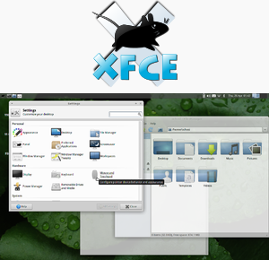
MATE es una bifurcación que continúa el escritorio clásico de GNOME 2. El lanzamiento de GNOME 3, reemplazando la metáfora de escritorio clásica con una nueva interfaz construida sobre GNOME Shell, provocó críticas en parte de la comunidad: muchos usuarios se negaron a aceptar la nueva interfaz y pidieron que alguien continuara el desarrollo de GNOME 2, y de ahí nació MATE.
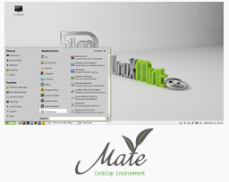
Cinnamon es otra bifurcación de GNOME 3, desarrollada por el equipo de Linux Mint, que mantiene una interfaz de escritorio tradicional.
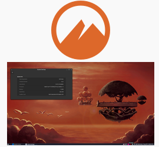
Evolución de los escritorios#
A continuación se muestra una pequeña evolución de los escritorios:
1998 — KDE 1
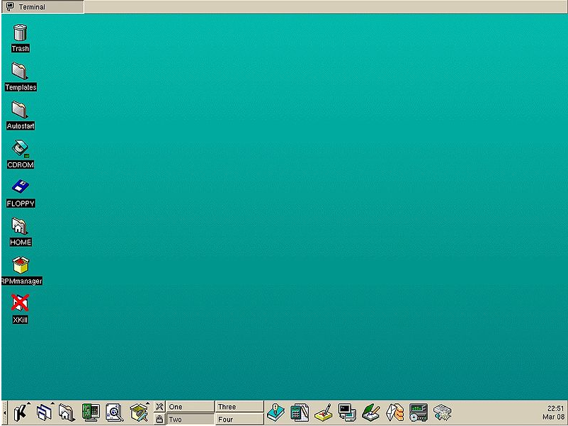
1999 — GNOME 1
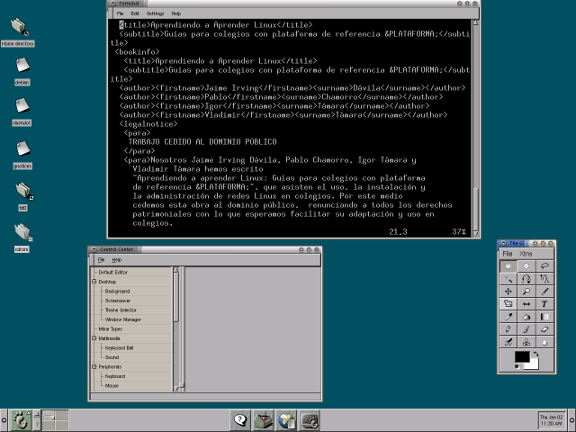
2000 — KDE 2
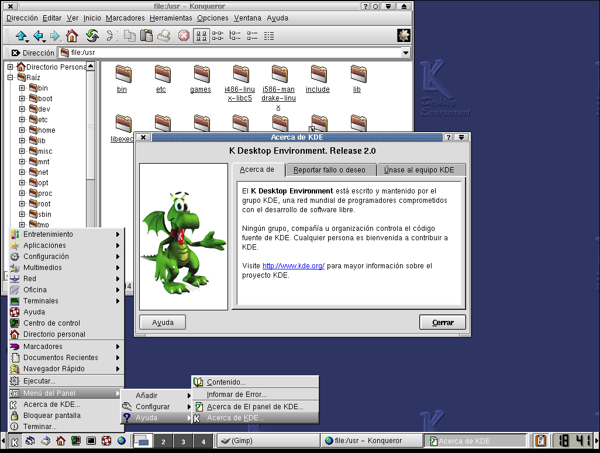
2002 — GNOME 2.0
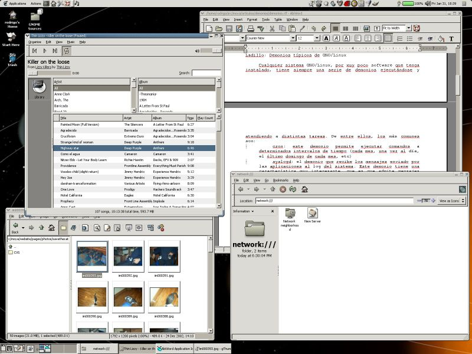
2004 — GNOME 2.6
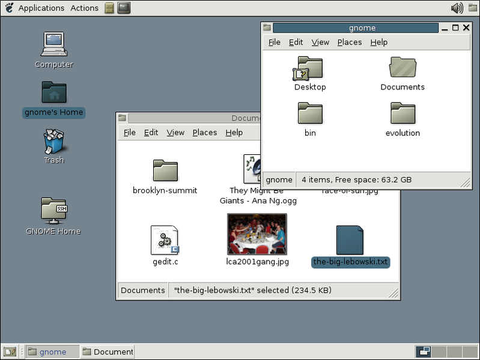
2007 — GNOME 2.20
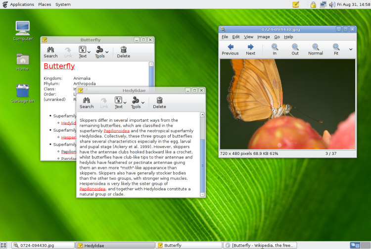
2007 — Xfce 4.4
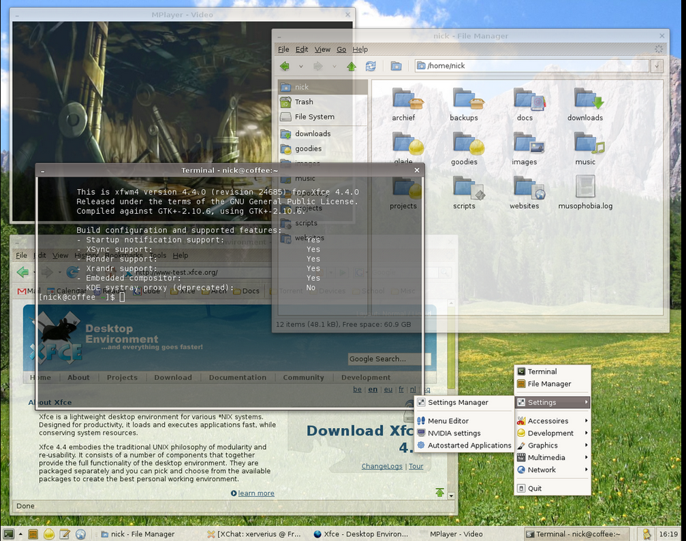
2008 — KDE 4.0
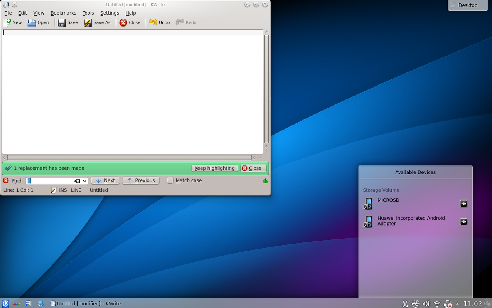
2014 — KDE Plasma 5
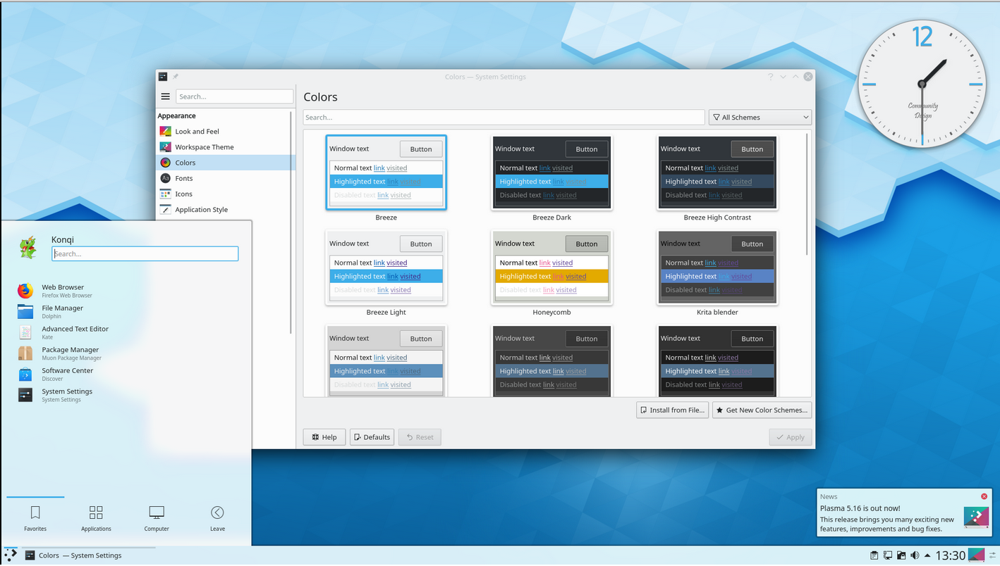
2020 — GNOME 3.36
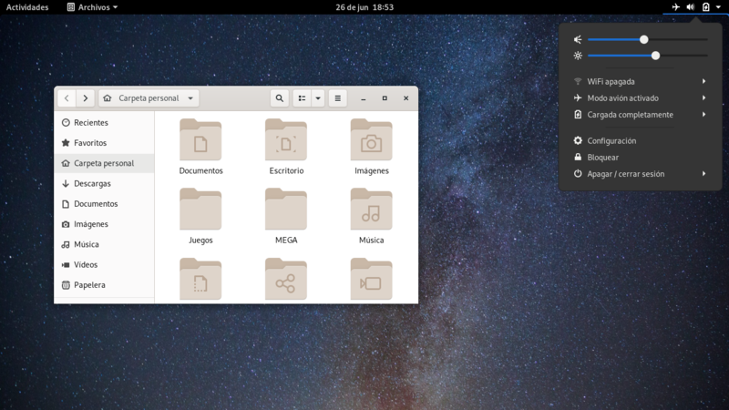
2021 — GNOME 40
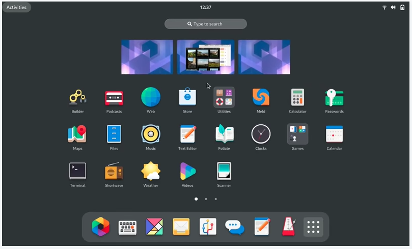